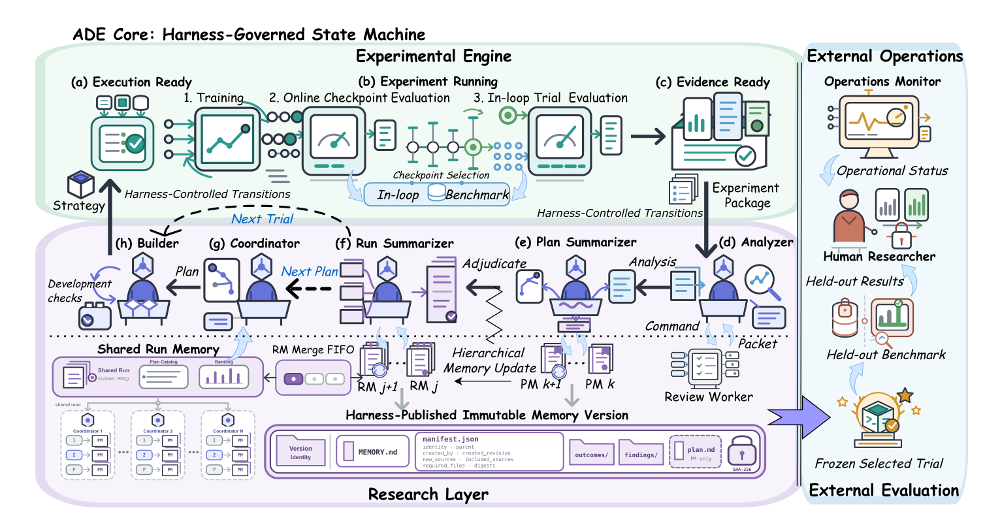
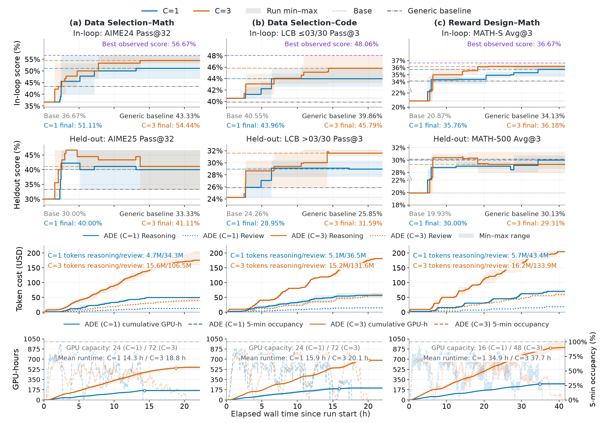

Develop strategies from evidence
Coordinators propose research directions. Builders implement them. Analyzers interpret experimental evidence, and Plan and Run Memory carry accepted findings into later decisions.
1 UNC–Chapel Hill 2 Alibaba Group 3 Peking University
Can agents use experimental feedback to develop better training data, rewards and curricula? ADE lets research agents propose, revise and combine strategies using cumulative findings, while a fixed experimental protocol controls training and evaluation. We study both the strategies they discover and the research process that produces them.
ADE separates the research process from the machinery that executes and evaluates each experiment.
Coordinators propose research directions. Builders implement them. Analyzers interpret experimental evidence, and Plan and Run Memory carry accepted findings into later decisions.
The Harness enforces the task contract. The Engine trains and evaluates under fixed conditions. Strategy selection uses in-loop scores; held-out evaluation assesses frozen checkpoints and never feeds back into research.

| Task | Intervention | Fixed training setup | Generic baseline |
|---|---|---|---|
| Data selection · Math / Code | Choose 384 of 3,840 trajectories | Qwen2.5-7B-Instruct · Long-CoT SFT | Random subset |
| Reward design · Math | Reward and group credit | Qwen2.5-0.5B · 100 RFT steps | Outcome-only reward |
| Curriculum learning · Math | Training-data schedule | Same RFT setup; fixed outcome reward | Random ordering |
Both research capacities improve held-out Macro Avg. Pass@K over the generic baseline. Gains in average correctness vary by task.
Table 3 · Each ADE row is the Best Run selected by in-loop scores among three Runs at that capacity, not the across-Run mean. Cells show Pass@K / Average@K (%). Macro Avg. weights the four held-out benchmarks equally. Full results ↗
For math selection at C = 3, mean AIME25 Pass@32 peaks at 46.67% and ends at 41.11%, while mean in-loop Pass@32 rises from 47.78% to 54.44% over the later phase. The final held-out score remains above the baseline, but continued search is not a guarantee of better generalization.
On math selection, ADE’s selected C = 1 strategy exceeds unified-agent, independent-search, outcome-only and raw-evidence alternatives on both in-loop metrics and mean held-out scores. Its held-out Macro Avg. Pass@K is 65.58%, versus 62.97% for the strongest alternative on that metric.
Three Coordinators improve final mean in-loop scores over one, at higher token use and triple the peak GPU allocation. Held-out returns differ by task. Experiment execution and waiting occupy 57–69% of Plan time at C = 1.

Three recorded C = 3 Runs, fifteen Plans each. Explore proposals, inherited strategies, findings and training curves. These are individual research trajectories, not aggregate results.
@misc{ding2026agenticdataengineeringllms,
title={Agentic Data Engineering for LLMs: System Design and a Controlled Empirical Study},
author={Ruomeng Ding and Qianli Shen and Zhaoyang Han and Meixin Chen and Daoyuan Chen and Yaliang Li},
year={2026},
eprint={2610.14238},
archivePrefix={arXiv},
primaryClass={cs.CL},
url={https://arxiv.org/abs/2610.14238}
}